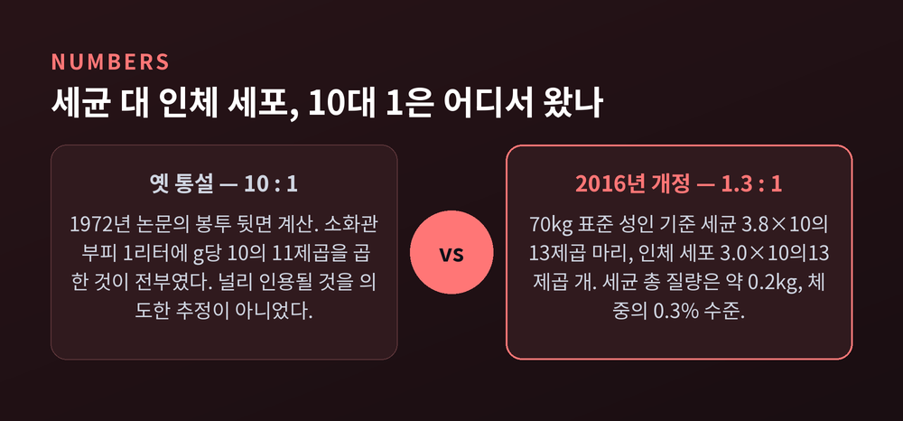
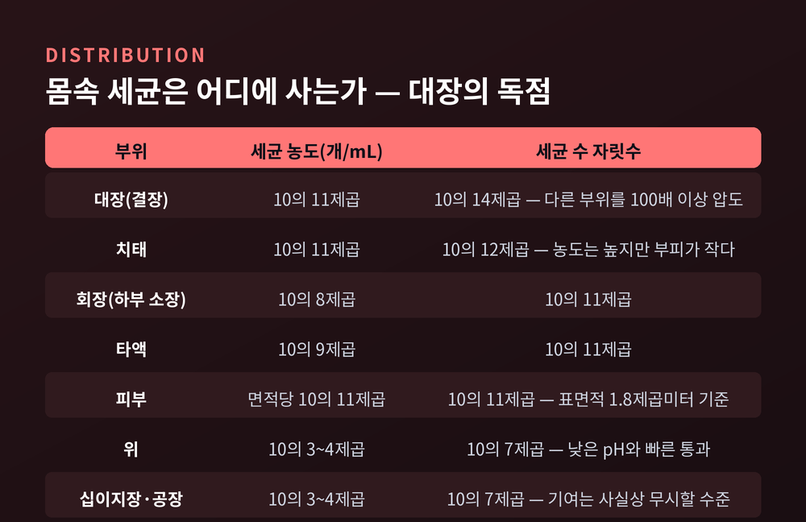
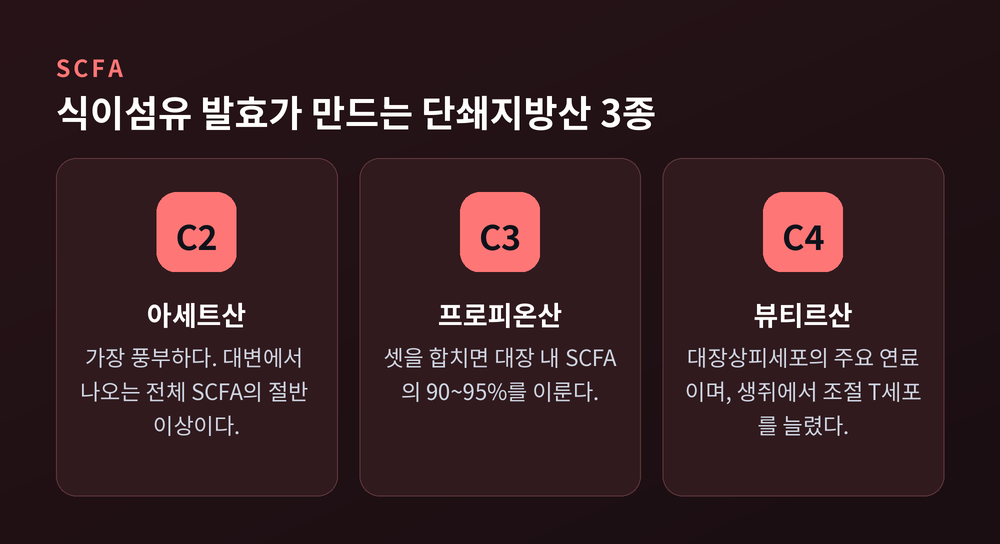
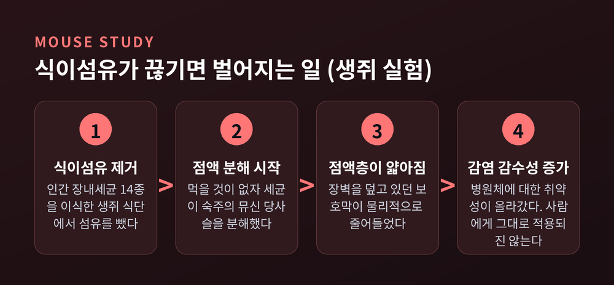
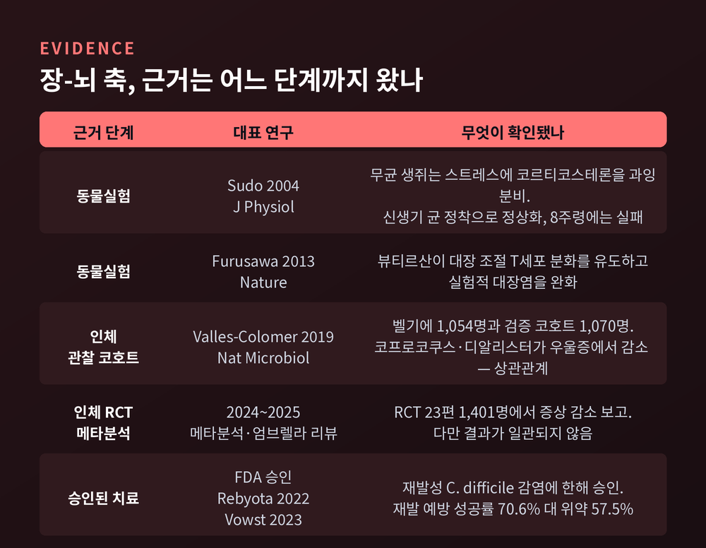

이번 글에서는 장내 미생물총과 장-뇌 축을 정리해 보겠습니다. 우리 몸에 사는 미생물이 몇 마리인지부터, 그들이 소화와 면역에 실제로 무엇을 하는지, 그리고 기분까지 건드린다는 이야기가 어디까지 확인된 사실인지를 순서대로 따라가 보려 합니다.
"몸속 세균이 인체 세포보다 10배 많다."
오랫동안 반복된 문장입니다. 그런데 이 숫자의 출처를 따라가 보면 조금 허무합니다.
1972년 Thomas Luckey가 논문에 적은 한 문장이 시작이었습니다. 소화관 부피를 1리터로 가정하고, 여기에 g당 10의 11제곱이라는 세균 밀도를 곱한 것이 전부였습니다. 널리 인용될 것을 염두에 둔 계산이 아니었습니다.
2016년, 바이츠만 연구소의 Ron Sender와 Ron Milo 연구팀이 이 값을 다시 계산했습니다. PLOS Biology에 실린 논문입니다.
70kg 표준 성인 남성 기준으로, 체내 세균은 3.8 × 10의 13제곱 마리. 인체 세포는 3.0 × 10의 13제곱 개. 비율은 약 1.3 대 1이었습니다.
10배가 아니라 거의 1대 1입니다.
세균의 총 질량도 다시 나왔습니다. 흔히 "체내 세균이 1~3kg"이라고 했지만, 개정 추정치는 약 0.2kg입니다. 체중의 0.3% 정도에 그칩니다.

다만 여기에는 흥미로운 단서가 붙습니다.
인체 세포 수의 90%는 적혈구와 혈소판 같은 핵 없는 세포입니다. 적혈구 하나만 2.5 × 10의 13제곱 개입니다. 이들을 빼고 유핵 세포만 세면, 비율은 다시 약 10 대 1이 됩니다.
결국 10대 1이라는 숫자가 통째로 틀렸다기보다, 무엇을 세포로 셀 것이냐의 정의 문제에 가깝습니다. 논문 저자들은 적혈구도 엄연한 세포라는 입장을 택했습니다.
그리고 이렇게 덧붙였습니다. 비율을 1대 1로 고친다고 해서 미생물총의 생물학적 중요성이 줄어드는 것은 아니라고 말입니다.
몸 전체에 고르게 퍼져 있을 것 같지만 그렇지 않습니다.
같은 논문이 부위별로 세균 농도와 부피를 곱해 정리한 결과를 보면, 대장이 나머지 전부를 최소 100배 이상 압도합니다.
위와 상부 소장의 세균 농도는 mL당 겨우 10의 3~4제곱 수준입니다. 위산의 낮은 pH와 빠른 통과 속도 때문입니다. 이 구간의 기여는 사실상 무시할 만합니다.

대장 내용물 부피는 MRI 영상 분석 기준 약 0.4리터. 대변 습중량 1g당 세균 밀도는 14개 연구의 기하평균으로 0.92 × 10의 11제곱 마리입니다.
연구진은 이 방법의 한계도 솔직히 적었습니다. 대변에서 잰 밀도를 대장 전체의 평균으로 쓰는 것이 얼마나 타당한지가 가장 큰 지식 공백이라는 것입니다. 실제로는 회장에서 맹장으로 넘어가는 구간의 10의 8제곱부터 대변의 10의 11제곱까지, 대장 안에도 농도 구배가 존재합니다.
미생물이 하는 일 중 가장 오래 알려진 것이 소화입니다.
NIH 인간 마이크로바이옴 프로젝트의 프로그램 매니저 Lita Proctor의 표현이 정확합니다. 인간은 자신의 식단을 소화하는 데 필요한 효소를 전부 갖고 있지 않습니다.
숫자로 보면 격차가 분명합니다. 인간 유전체의 단백질 코딩 유전자는 약 22,000개입니다. 반면 인체 마이크로바이옴이 기여하는 고유 단백질 코딩 유전자는 약 800만 개로 추정됩니다. 인간 유전자의 약 360배입니다.
핵심 산물은 단쇄지방산(SCFA)입니다.
소화되지 않고 대장까지 내려온 탄수화물, 즉 식이섬유를 세균이 발효하면 짧은 지방산이 만들어집니다. 아세트산, 프로피온산, 뷰티르산 세 가지가 대장 내 전체 SCFA의 90~95%를 차지합니다.

이 중 뷰티르산은 대장상피세포의 주요 에너지원입니다. 우리 몸의 세포가 세균이 만든 물질을 연료로 쓴다는 뜻입니다.
생성된 SCFA의 90~95%는 장 점막에서 흡수됩니다. 대변으로 빠져나가는 양은 일부에 불과합니다.
여기서부터는 동물실험 이야기입니다. 구분해서 읽어 주시길 부탁드립니다.
2016년 Cell에 실린 Desai 등의 연구는 인간 장내세균 14종으로 만든 합성 미생물총을 생쥐에 이식했습니다. 그리고 식단에서 식이섬유를 뺐습니다.
세균들은 먹을 것이 없자 숙주의 점액을 먹기 시작했습니다. 장벽을 덮고 있는 뮤신 당사슬을 분해한 것입니다. 점액층은 얇아졌고, 병원체에 대한 감수성이 올라갔습니다.

Sonnenburg 연구팀의 결과는 더 인상적입니다. 인간 미생물총을 이식한 생쥐에게 저섬유 식단을 먹이자 단 3세대 만에 미생물 다양성이 급감했습니다. 정상 식단으로 되돌려도 회복되지 않았습니다.
다시 강조하지만 생쥐 모델입니다. 사람에게 그대로 적용된다고 말할 수 없습니다.
장은 소화 기관이면서 동시에 면역 기관입니다.
장관연관림프조직(GALT)에는 보고에 따라 인체 면역세포의 60~70%가 있는 것으로 알려져 있습니다. 다만 이 수치는 정밀한 계수가 아니라 근사치라는 점을 함께 말씀드립니다.
미생물이 면역을 어떻게 조절하는지 보여준 대표 연구가 2013년 Nature에 실렸습니다.
Furusawa와 Ohno 연구팀은 생쥐에서 클로스트리디아 집락이 조절 T세포(Treg) 생성을 촉진한다는 것을 확인했습니다. Treg는 염증과 알레르기 반응을 억제하는 세포입니다.
대사체 분석 결과, 대장 내강의 SCFA 농도가 대장 Treg 세포 수와 양의 상관을 보였습니다. 그중에서도 뷰티르산이 시험관과 생체 모두에서 Treg 분화를 유도했습니다. 실제로 실험적 대장염의 진행도 완화했습니다.
식이섬유를 먹으면 세균이 뷰티르산을 만들고, 그 뷰티르산이 면역을 진정시키는 세포를 늘린다 — 경로가 이렇게 이어집니다. 물론 생쥐에서의 이야기입니다.
한 가지 더 흥미로운 발견이 있습니다. 마이크로바이옴 프로젝트에 따르면 거의 모든 사람이 병원체를 일상적으로 지니고 있습니다. 건강한 사람에게서 이들은 병을 일으키지 않고 그저 공존합니다. 어떤 조건에서 병원체가 돌변하는지는 아직 규명되지 않았습니다.
이제 뇌입니다.
장-뇌 축은 위장관과 중추신경계 사이의 양방향 통신 체계입니다. 장신경계, 미주신경, 면역 경로, 내분비 신호가 함께 매개합니다.
먼저 배선을 봅니다.
장신경계는 식도에서 직장까지 뻗은 신경망입니다. 뉴런 수는 자료에 따라 1억에서 6억 개로 폭이 넓고, 흔히 5억 개로 인용됩니다. "두 번째 뇌"라는 별명이 여기서 나왔습니다.
주목할 점은 방향입니다. 미주신경 섬유의 약 80%가 구심성입니다. 장에서 뇌로 올라가는 감각 경로가 대부분이라는 뜻입니다. 뇌가 장에 명령을 내리는 섬유는 그보다 적습니다.
장이 주로 말하고, 뇌가 주로 듣는 구조에 가깝습니다.
신호가 올라가는 길은 크게 셋입니다. 미생물 대사산물이 장크롬친화세포와 장신경세포를 자극하거나 미주신경 말단에 직접 작용하는 신경 경로, 장 면역세포와 사이토카인을 거치는 면역 경로, 그리고 SCFA와 담즙산·트립토판 유도체가 혈류를 타는 내분비 대사 경로입니다.
2025년 리뷰들은 SCFA와 뇌 면역세포인 미세아교세포의 상호작용에 특히 주목합니다. 생리적 농도의 SCFA가 손상된 미세아교세포의 기능을 조절하고 염증인자 발현을 낮춘다는 보고입니다.
자주 인용되는 숫자가 있습니다. 인체 세로토닌의 약 90%가 장에서 만들어진다는 것입니다.
사실입니다. 장의 장크롬친화세포가 그 대부분을 생산합니다.
2015년 Cell에 실린 Yano와 Hsiao 연구팀의 논문은 여기서 한 걸음 더 나갔습니다. 생쥐와 인간의 장내 미생물총 중 아포자 형성균이 장크롬친화세포의 세로토닌 생합성을 촉진한다는 것을 보였습니다. 미생물이 만든 특정 대사산물이 크롬친화세포에 직접 신호를 보냈습니다.
다만 이 결과가 곧바로 기분으로 이어지지는 않습니다.
장에서 만든 세로토닌은 혈액뇌장벽을 그대로 통과하지 못합니다. 이 논문이 실제로 보인 것은 위장관 운동성 같은 말초 효과였습니다.
"장 세로토닌 90%"와 "기분의 90%"는 전혀 다른 문장입니다. 이 둘을 붙여 쓰는 순간 과학이 아니라 광고 문구가 됩니다.
근거의 단계를 나눠서 보겠습니다.
동물실험. 2004년 Sudo 연구팀의 고전적 실험이 있습니다. 무균 생쥐에게 구속 스트레스를 주자 정상 균총 생쥐보다 코르티코스테론과 ACTH를 훨씬 많이 분비했습니다. 대뇌피질과 해마의 BDNF 발현도 감소해 있었습니다.
흥미로운 것은 회복 조건입니다. 신생기에 비피도박테리움 인판티스를 정착시키면 이 과잉 반응이 완전히 정상화됐습니다. 6주령에는 부분적으로만, 8주령에는 회복되지 않았습니다. 청소년기 이전에 결정적 시기가 있다는 뜻입니다.
인체 관찰 연구. 2019년 Nature Microbiology에 실린 대규모 코호트 연구가 있습니다. 벨기에 1,054명, 네덜란드 검증 코호트 약 1,070명 규모입니다.
뷰티르산 생산균인 파이칼리박테리움과 코프로코쿠스가 높은 삶의 질과 일관되게 연관됐습니다. 코프로코쿠스와 디알리스터는 우울증에서 감소해 있었고, 항우울제 복용의 교란 효과를 보정한 뒤에도 그러했습니다.
그러나 이것은 상관관계입니다. 미생물이 우울을 만든 것인지, 우울한 상태가 식습관과 장 환경을 바꾼 것인지, 이 설계로는 가릴 수 없습니다.
인체 무작위배정시험. 2024~2025년의 메타분석들은 조심스럽습니다. 임상 진단을 받은 환자 대상 RCT 23편, 1,401명을 분석한 결과 프로바이오틱스가 4주·8주·12주 시점에 위약 대비 우울·불안 증상을 낮출 수 있다고 보고됐습니다.
다만 같은 시기의 엄브렐라 리뷰들은 결과의 비일관성과 방법론적 질 문제를 지적합니다. 현재 위치를 한 문장으로 옮기면 "조심스럽게 유망하다" 정도입니다.

개념이 실제 치료로 이어진 대표 사례가 하나 있습니다.
재발성 클로스트리디오이데스 디피실 감염입니다. 분변 미생물총 이식(FMT)은 이 질환에서 단회 시술로 90%에 가까운 성공률을 보이며, 항생제보다 재발률이 훨씬 낮다고 보고됩니다.
미국 FDA는 2022년 11월 Rebyota를, 2023년 4월 경구형 Vowst를 승인했습니다. Rebyota는 8주까지 재발 예방 성공률 70.6% 대 위약 57.5%, Vowst는 182명 연구에서 재발률 12% 대 위약 40%였습니다.
반면 아직 가설 단계인 영역도 분명합니다.
파킨슨병이 그렇습니다. Braak 가설은 알파시누클레인 병리가 장에서 미주신경을 타고 뇌로 올라간다고 봅니다. 2019년 Neuron에 실린 생쥐 실험은 이를 뒷받침했습니다. 장에 병리 단백질을 주입하자 미주신경 등쪽운동핵부터 순서대로 퍼졌고, 몸통 미주신경 절단술이 그 전파를 막았습니다.
그런데 사람 쪽 증거는 엇갈립니다. 충수는 알파시누클레인이 풍부해 진입점 후보로 지목되지만, 2025년 체계적 문헌고찰과 메타분석은 충수절제술과 파킨슨병 위험 사이에 연관이 없다고 결론지었습니다. 같은 해 리뷰는 장에서 뇌로 가는 전파 가설이 아직 실험적으로 증명되지 않았다고 못박습니다. 비인간 영장류에서는 양방향 전파가 보고되기도 했습니다.
과민성장증후군은 그 사이 어딘가에 있습니다. 질병관리청 국가건강정보포털은 이 질환의 병태생리로 대장 운동이상과 감각이상, 뇌-장관 상호작용 이상, 감염 후 지속되는 저등급 염증, 면역계 이상, 장내 미생물무리의 변화, 유전 소인, 정신사회적 요인을 함께 제시합니다. 한 가지 검사로 진단할 수 없는 이유이기도 합니다.
여기서 조심스러워집니다.
확실하게 말할 수 있는 것은 그리 많지 않습니다. 식이섬유가 SCFA의 재료라는 것, 그 SCFA가 대장세포의 연료이자 면역 조절 신호로 쓰인다는 것 정도입니다. 나머지는 아직 연구 중입니다.
특정 유산균 제품이 기분을 바꿔준다는 주장은 현재 근거보다 앞서 나간 이야기입니다. 메타분석의 결론은 "효과가 있을 수 있으나 일관되지 않다"에 머물러 있습니다.
소화기 증상이 지속되거나, 우울·불안으로 힘드시다면 반드시 의료 전문가와 상의하시길 권합니다. 이 글은 정보 정리일 뿐 진단이나 치료를 대신할 수 없습니다. 개인의 상태와 복용 중인 약에 따라 판단이 달라집니다.
정리하면 이렇습니다.
예전에는 장을 그저 음식을 처리하는 관으로 여겼습니다. 지금은 몸에서 가장 큰 면역 기관이자, 뇌로 신호를 올려보내는 발신처로 봅니다. 그 변화의 중심에 대장에 사는 0.2kg의 미생물이 있습니다.
다만 여기서 한 발 더 나가는 순간 과학은 흐려집니다. 상관은 인과가 아니고, 생쥐는 사람이 아니며, 8주 시험 결과는 평생의 처방이 아닙니다.
"장은 분명히 뇌에게 말을 걸고 있습니다. 다만 우리는 아직 그 말을 다 알아듣지 못합니다."
수십조 마리가 무슨 이야기를 하고 있는지, 앞으로 10년 안에 얼마나 더 알아낼 수 있을지 — 저는 그 대목이 가장 궁금합니다.